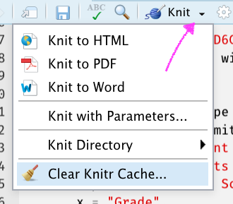
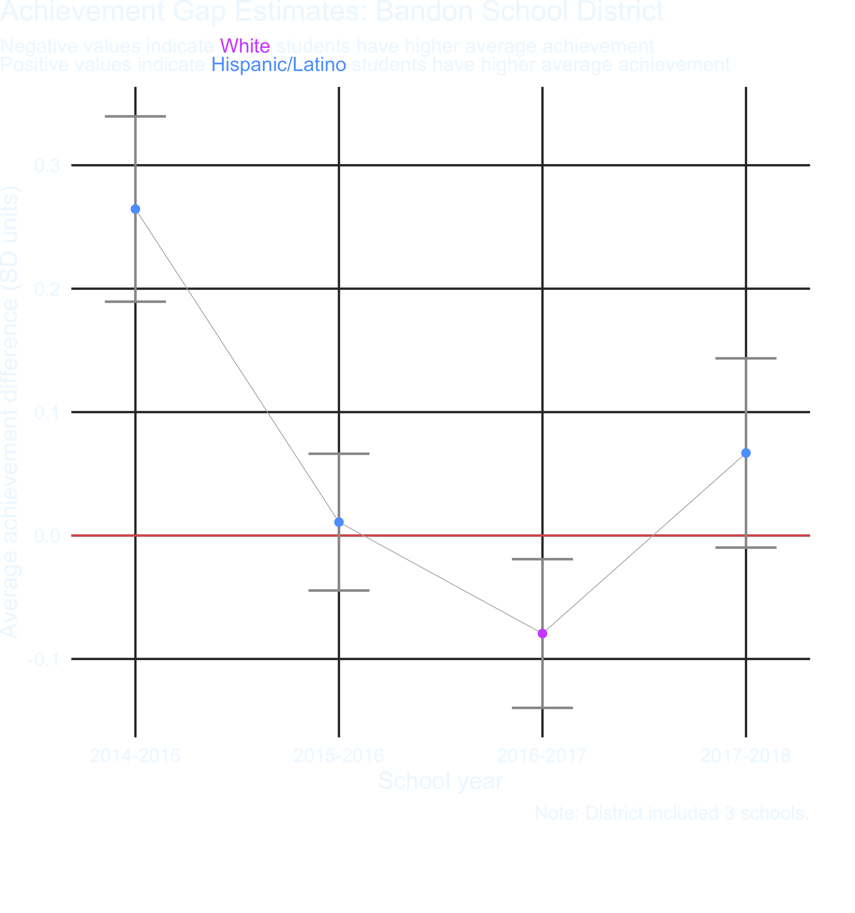

Midterm: Take-home
Due: 11:59 PM, 5/6/19
Setup
This work should all be housed in a GitHub repo. Establish the repo and add collaborators if you have any.
Loading the data takes a minute, so I would suggest you do it once and cache it. This just means including knitr::opts_chunk$set(cache = TRUE) in one of your chunk options.
The problem with caching is that sometimes results of a later chunk depend upon earlier ones and things can get out of sync. If you make a change and it doesn’t have the result you expect, try clearing the cache and knitting again.

If this is confusing, don’t worry about it. Either check in with me or ignore this part and don’t use caching. It will just take a little longer to render your file each time you click “knit”.
I would also recommend not tracking the cache files. This means adding the cache folder to your .gitignore file. If you initialized your repo with the R .gitignore file this is actually already taken of for you. If not, add /*_cache/ to your .gitignore.
Part A: Data
10 points
The following function downloads data from the Oregon Department of education website on the number of students who scored in each performance category on the statewide assessment by race/ethnicity for every school in the state. It takes one argument, year, which must be a two digit integer from 15 to 18 (representing the 2014-15 to 2017-18 school years).
NOTE: This function uses the glue function from the package of the same name. If you do not already have this package installed, please first install it with install.packages("glue"). It also uses {rio} for the import, which you should already have installed, but if not, install that first too.
download_file <- function(year) {
link <- glue::glue("https://www.oregon.gov/ode/educator-resources/assessment/TestResults20{year}/pagr_schools_ela_raceethnicity_{year-1}{year}.xlsx")
rio::import(link, setclass = "tibble", na = c("-", "--", "*"))
}- (5 points) Use the function above to download all the data from 2014-15 to each of the past 4 school years and bind it into a single data frame, using a single function (i.e., one line of code). Note, this may take a minute or two to run, depending on your Internet speed.
Conduct some basic data cleaning to make your data file look like the following.
- Filter for only student groups coded as
"White"or"Hispanic/Latino". - Select variables related to the number of students in each of the levels (1:4), and not percentages or collapsed levels.
- Remove any row that has missing data in any of the n variables
## # A tibble: 90,576 x 7
## academic_year district school student_group grade_level level n
## <chr> <chr> <chr> <chr> <chr> <chr> <int>
## 1 2014-2015 Adrian SD… Adrian Elemen… Hispanic/Lat… Grade 3 1 2
## 2 2014-2015 Adrian SD… Adrian Elemen… Hispanic/Lat… Grade 3 2 1
## 3 2014-2015 Adrian SD… Adrian Elemen… Hispanic/Lat… Grade 3 3 2
## 4 2014-2015 Adrian SD… Adrian Elemen… Hispanic/Lat… Grade 3 4 1
## 5 2014-2015 Adrian SD… Adrian Elemen… Hispanic/Lat… Grade 6 1 2
## 6 2014-2015 Adrian SD… Adrian Elemen… Hispanic/Lat… Grade 6 2 3
## 7 2014-2015 Adrian SD… Adrian Elemen… Hispanic/Lat… Grade 6 3 2
## 8 2014-2015 Adrian SD… Adrian Elemen… Hispanic/Lat… Grade 6 4 0
## 9 2014-2015 Adrian SD… Adrian Elemen… Hispanic/Lat… Grade 7 1 2
## 10 2014-2015 Adrian SD… Adrian Elemen… Hispanic/Lat… Grade 7 2 2
## # … with 90,566 more rows- (5 points) Collapse (sum) the n across grades and school for each district within each academic year, student group, and level. At the same time, calulate the number of schools (unique schools listed) for each district. Also move your data to a wider format where the student groups become new columns, filled by the district n. Remove districts that did not report numbers for one or both student groups (i.e., drop missing data from the new columns). Your data frame should look like the below
## # A tibble: 1,948 x 6
## academic_year district n_schools level hispanic_latino white
## <chr> <chr> <int> <chr> <int> <int>
## 1 2014-2015 Adrian SD 61 2 1 6 8
## 2 2014-2015 Adrian SD 61 2 2 6 17
## 3 2014-2015 Adrian SD 61 2 3 6 23
## 4 2014-2015 Adrian SD 61 2 4 1 22
## 5 2014-2015 Amity SD 4J 3 1 19 75
## 6 2014-2015 Amity SD 4J 3 2 26 86
## 7 2014-2015 Amity SD 4J 3 3 14 101
## 8 2014-2015 Amity SD 4J 3 4 3 31
## 9 2014-2015 Ashland SD 5 6 1 18 76
## 10 2014-2015 Ashland SD 5 6 2 24 141
## # … with 1,938 more rowsPart B: Achievement gaps
30 points
If you have not already done so, please install the {gapr} package using the following code
remotes::install_github("datalorax/gapr")The {gapr} package includes, at the moment, one function, estimate_v, which estimates the average difference between two distributions in terms of an effect size when the only data available are counts within bins (for more information, see Ho & Reardon, 2012). The nice thing about this approach is that we’re able to obtain the effect size of average differences in achievement between two groups of students as if we had the full, student level data even though we just have counts within bins (performance levels).
The estimate_v function takes 3 arguments in the following order: (1) the data frame including the counts for each group, (2) a character string stating the name of the column with the counts for the reference group, and (3) a character string stating the name of the column with the counts for the focal group.
To estimate the average achievement difference between students coded Hispanic/Latino versus White for the first school district in the first year in our data, we would run the following
library(gapr)
d[1:4, ] %>% # data source - just first four rows for first district
estimate_v("white", "hispanic_latino") # columns for reference/focal groups## auc v v_se
## 1 0.2824054 -0.8141778 0.07283486We can see that students coded Hispanic/Latino score, on average, about 0.81 standard deviations below students coded White within this school district.
(10 points) Estimate an achievement gap effect size for every school district in the state that reported data on both student groups (i.e., using the data we created above), for each academic year. Note, on my computer this took about 38 seconds. It will likely take a bit longer for you, but shouldn’t take too long. You may get a warning. Just go ahead and ignore that for now.
(10 points) The plot below shows the achievement gap estimate for one school district across years. Produce a similar plot to the below for each of the first 100 school districts. Make sure you don’t miss the caption noting the number of schools in the district.
Hint: You need to select unique districts. You may want to try something like the following
dists <- unique(v$district)[1:100]
model_list_object %>%
filter(district %in% dists)
- (10 points) Save the plots into a “plots” directory. Make sure the file names are meaningful.
HINTS
- You don’t have to use a loop to create the file names (maybe give
{glue}a try? Otherwisepasteorpaste0will work fine). - When working with the code, limit the number of plots you’re saving to, say, the first five to make sure it works before running it on all plots.